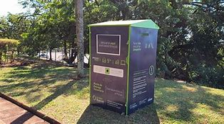
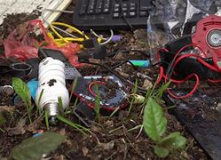

Importância do Descarte Correto
O descarte inadequado de lixo eletrônico representa uma ameaça crescente ao meio ambiente e à saúde pública. Dispositivos eletrônicos contêm substâncias tóxicas, como chumbo, mercúrio, cádmio e arsênio, que, quando descartados de forma imprópria, podem contaminar o solo e a água, afetando ecossistemas e colocando em risco a biodiversidade. Esses metais pesados podem infiltrar-se no solo e nos corpos d’água, afetando os ecossistemas e a fauna local.
sga.usp.br
Ambiental
Além disso, a exposição a essas substâncias pode causar danos neurológicos, problemas respiratórios, distúrbios hormonais e até câncer. A inalação de substâncias tóxicas provenientes do descarte inadequado de resíduos eletrônicos pode causar problemas respiratórios, neurológicos e até câncer.
seteambiental.com.br
malibrasilreversa.com.br
A queima inadequada desses resíduos libera gases tóxicos perigosos, como dioxinas e furanos, na atmosfera, contribuindo para o aquecimento global e agravando as mudanças climáticas.

Pontos de Coleta
Diversas cidades brasileiras têm implementado pontos de coleta específicos para o descarte adequado de lixo eletrônico, operados por organizações não governamentais (ONGs), empresas privadas e órgãos governamentais. Esses pontos de coleta, também conhecidos como Pontos de Entrega Voluntária (PEVs), estão frequentemente localizados em áreas urbanas e são facilmente acessíveis ao público. Neles, é possível entregar dispositivos antigos, baterias, cabos e outros componentes eletrônicos para que sejam tratados e reciclados corretamente.
Dia Mundial da Limpeza
+1
Reciclagem Brasil
+1
Além dos PEVs, muitas cidades contam com centros de reciclagem e pontos de entrega voluntária mantidos por ONGs e empresas privadas. Esses locais recebem materiais recicláveis, incluindo o lixo eletrônico, e garantem que sejam tratados de forma segura e adequada, evitando a contaminação ambiental.
Perigos do Descarte Inadequado
O descarte inadequado desses resíduos representa uma ameaça significativa ao meio ambiente e à saúde pública. Muitos dispositivos eletrônicos contêm substâncias tóxicas, como chumbo, mercúrio, cádmio e cromo, que, quando liberadas no meio ambiente, podem contaminar o solo, a água e o ar, afetando ecossistemas e colocando em risco a biodiversidade. Além disso, a exposição a esses elementos pode causar danos neurológicos, problemas respiratórios, distúrbios hormonais e até câncer.


Cooperativas e ONGs
Organizações como a Green Eletron e a plataforma eCycle oferecem ferramentas online para auxiliar na localização de pontos de coleta de lixo eletrônico.
Green Eletron: A Green Eletron disponibiliza um localizador de Pontos de Entrega Voluntária (PEVs) em seu site. Ao acessar greeneletron.org.br/localizador, você pode inserir seu endereço e selecionar a categoria de resíduo para encontrar o ponto de coleta mais próximo. O sistema fornece informações detalhadas, incluindo o endereço, horário de funcionamento e o tamanho do coletor, facilitando o descarte adequado de seus dispositivos eletrônicos.
Green Eletron
eCycle: A plataforma eCycle oferece um mecanismo de busca gratuito para localizar postos de descarte, reciclagem ou doação próximos a você. Acesse ecycle.com.br/postos/reciclagem.php, insira o tipo de resíduo que deseja descartar e sua localização para encontrar os pontos de coleta disponíveis em sua região.